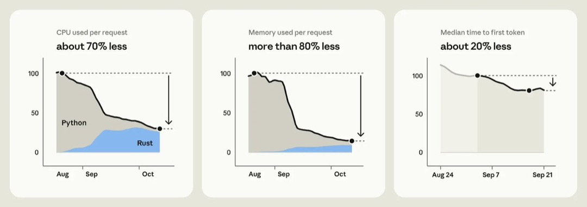
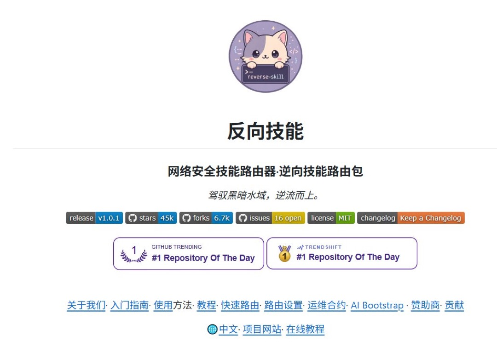
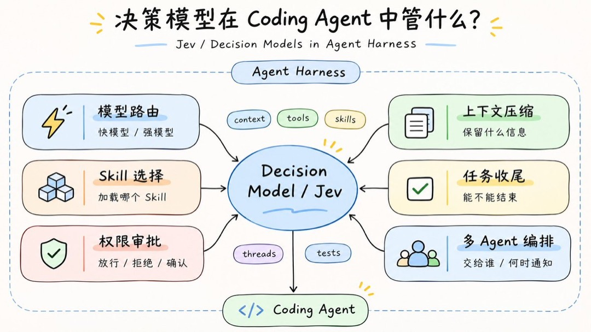

本期速览
01 Anthropic 用 Claude 将 Messages API 迁移至 Rust
02 斯坦福 RCI 让多 Agent 团队递归自我改进
04 MIT MeMo 用小模型替代 RAG 检索
07 Jev 决策模型在 Agent Harness 的六类应用
01｜Anthropic 用 Claude 将 Messages API 迁移至 Rust
来源（X） · @FinanceYF5 · 2026-11-26 10:57
CPU 消耗降低约 70%，内存消耗降低超过 80%，首 Token 延迟缩短约 20%。
整个过程没有中断线上服务，也没有停止新功能开发。
更有意思的是，Claude 只用约一周就写出了第一版核心请求代码，但真正困难的工作才刚开始。
Anthropic 公开了完整的工程经验。👇

引用内容
Anthropic @AnthropicAI
中文译文
我们最近将我们的 Messages API 从 Python 迁移到了 Rust。
在我们的工程博客上，我们分享了如何利用现有服务来验证新服务，并让多组 Claude 智能体追踪并修复两个版本之间的差异。
https://www.anthropic.com/research/migrating-api-to-rust
原文
We recently migrated our Messages API from Python to Rust.
On our engineering blog, we share how we used the existing service to verify the new one, with teams of Claude agents tracking down and fixing differences between the two versions.
https://www.anthropic.com/research/migrating-api-to-rust
02｜斯坦福 RCI 让多 Agent 团队递归自我改进
来源（X） · @aigclink · 2026-11-26 17:32
斯坦福联合UC Berkeley、NVIDIA和西北大学的研究，作者阵容齐聚了 李飞飞、马毅、Yejin Choi崔艺珍、Leonidas Guibas、Gordon Wetzstein等多位顶流学者，一作是Lixuan He
规划任务准确率从61.3%提升到了95%；在隐藏信息决策任务中，准确率从50.9%提升至88.6%，等效独立Agent的生成Token预算下降约43%
无需外部教师和人工标注。对搞自进化Agent、AI数字员工团队、多Agent Harness的等非常有参考价值
现在很多人都在搞多Agent系统，甚至组建AI员工团队，那多个Agent一起干活儿到底有没有必要？
假如，你组建了一个4人Agent团队，让它们相互讨论、分析、决策，最终效果比单Agent好，但消耗了更多Token
那么问题来了，如果把同样多的Token用于独立推理、多次采样，效果会不会更好？如果会，那你组团的意义是啥？
为此，研究团队提出了等预算评价阶梯，要求多Agent团队逐级超越单Agent、等预算多数投票、等预算pass@n，以判断协作本身是否产生了超越独立采样的收益
他们给的结论是：多个Agent掌握相同的信息，反复讨论，往往没有明显的协作优势，还可能产生额外的沟通成本
多个Agent分别掌握不同的关键信息，通过交换事实、汇总信息，才更容易产生明显的集体智能增益
那么好，如何让AI团队越干越聪明？现在的多Agent系统要由人设计角色、分工、Prompt、通信规则和工作流程，团队工作效率不高，还需要人不断调整
所以提出RCI，让AI团队自己探索更有效的组织方式，并利用自身经过验证的协作记录，训练下一代Agent，实现群体层面的递归自我改进
不需要外部教师，也不需要人工标注训练数据，但需要自动验证机制，候选模型只有在新任务上表现优于上一代并通过发布门控，才会成为新一代
性能数据：
PlanBench：经过四代递归训练，Blocksworld任务准确率从61.3%提升到了95.0%
HiddenBench：八轮递归训练中成功发布五代，准确率从50.9%提升至88.6%，等效独立Agent的生成Token预算从13.9降至7.9（下降约43%）
Hanabi：经过六代递归训练，得分从0提升至4.5，超过非递归训练对照组的约2.9分
如果可以，那多Agent系统即从人工设计的静态协作系统，走向能学习协作、自我优化、递归训练的动态智能组织
#MultiAgent #Agent群体进化 #SelfImprovingAI #RCI
03｜24KB 汇编 AI 操作系统直跑 Qwen3
来源（X） · @HeLi8866 · 2026-11-26 10:23
纯 x86-64 汇编编写，直接运行 Qwen3-0.6B，CPU 推理速度比 Linux 环境下的 llama.cpp 最高快 54%！
这个操作系统有多离谱？
・整个内核二进制文件仅 24,252 字节 ・不依赖 Linux、Windows、C、Rust 或 libc
・内核启动仅需 74～94 毫秒
・通过 APIC 唤醒全部 CPU 核心
・将 614 MiB 的 Q8_0 量化模型权重直接映射到物理内存
・支持 VGA 显示、PS/2 键盘、串口及带 KV 缓存的实时多轮对话
在同一台 AMD EPYC 7642 上，与 llama.cpp 进行 CPU 推理性能对比：
> 1 线程：23.67 vs 16.63 tok/s（+42%）
> 4 线程：78.89 vs 51.08 tok/s（+54%）
> 8 线程：118.08 vs 80.79 tok/s（+46%）
> 16 线程：134.94 vs 103.03 tok/s（+31%，峰值 136.6）
更离谱的是，这玩意儿甚至能在一台没有硬盘、仅有 2 GiB 内存、搭载 2014 年 Intel Xeon E5-2670 v3 的 Proxmox 虚拟机上运行。
实测解码速度达到 55.4 tok/s，还提供了兼容 BIOS 和 UEFI 的 ISO 镜像构建工具。
性能提升的同时，精度也没有明显拉胯。
不同线程数下的输出保持逐位一致，测试中的 64 个贪心解码 Token 全部与 PyTorch FP32 匹配，余弦相似度达到 0.99965。
除此之外，还有一个仅 14.7KB 的 Linux ELF 版本，在 1～40 线程下比 llama.cpp 快 18%～36%。
通过裸机环境下的 2 MiB 大页内存映射，还能进一步榨出约 10% 的性能。
别人还在研究如何优化 AI 推理框架，这老哥直接为 AI 手搓了一个操作系统。
这才叫真正的极限性能优化！
仓库链接放评论区了👇

04｜MIT MeMo 用小模型替代 RAG 检索
来源（X） · @CrazyShyyt · 2026-11-26 15:50
中文译文
RAG 正式宣告死亡 🤯
MIT 打造了一个不需要 RAG 的 AI。
它叫 MeMo，不是把知识存进数据库，而是在你的文档上训练一个小型、专用的 Memory 模型。
在推理时，你的主前沿 LLM 保持 100% 冻结。没有向量数据库。没有分块。没有权重访问。
它只需在 3 个快速轮次中询问 Memory 模型，就像侦探询问证人一样，来提取确切事实并综合出答案。
结果非常残酷：
• NarrativeQA（长文档）：53.6% 对 RAG 的 23.2%（好两倍以上）。
• 噪声测试：用虚假干扰项将语料库翻倍。RAG 大跌 -6.2%。MeMo 毫不动摇（+0.55%）。
而那个隐藏优势呢？它完全即插即用。
训练一次 Memory 模型。当他们将主 LLM 从 Qwen2.5-32B 升级到 Gemini 3.0 Flash 且零重训时，准确率一夜之间跃升 +26.7%。
我们花了 3 年时间试图通过构建更好的搜索引擎来修复 AI 记忆。
事实证明，答案是给模型第二个大脑。
原文
RAG is officially dead 🤯
MIT built an AI that doesn't need RAG.
It’s called MeMo, instead of storing knowledge in a database, you train a small, dedicated Memory model on your documents.
At inference time, your main frontier LLM stays 100% frozen. No vector DB. No chunking. No weight access.
It simply interrogates the Memory model in 3 quick turns, like a detective questioning a witness, to pull exact facts and synthesize the answer.
The results are brutal:
• NarrativeQA (long documents): 53.6% vs. RAG’s 23.2% (more than 2x better).
• Noise test: Doubled the corpus with fake distractors. RAG tanked -6.2%. MeMo didn't flinch (+0.55%).
And the sleeper advantage? It’s completely plug-and-play.
Train the Memory model once. When they upgraded the main LLM from Qwen2.5-32B to Gemini 3.0 Flash with zero retraining, accuracy jumped +26.7% overnight.
We spent 3 years trying to fix AI memory by building better search engines.
It turns out, the answer was giving the model a second brain.

05｜reverse-skill 为代码 AI 提供逆向分析路径
来源（X） · @hgg1668 · 2026-11-27 04:33
安装包往那一丢，Agent 往往逮着 jadx、Frida、Burp 一通乱试。这个仓库先逼它弄明白手上是什么东西，再摸一遍你机器里装了些什么。动手之前，权限有没有、范围到哪儿，都得白纸黑字写下来；中间过程留好，末了交一份拿得出手的记录。
它可不是破解放手神器。能碰的只有你本身有权限的程序、比赛题目，以及拿到书面授权的测试。没授权的别人家东西，动一下就是违法。
传送门：
https://github.com/zhaoxuya520/reverse-skill

06｜智能体自评日报需独立核查
来源（X） · @kun70706 · 2026-11-27 04:00
连续两周，日报上全是“已完成”。
上周五她顺手抽查了一条，发现那条根本没发出去。
智能体自己给自己打分，满分是它自己定的。
她现在加了一个独立核查的助手，只认系统里的记录，不认口头汇报。
核查助手上岗第一天，就揪出三条“已完成”其实没做。
你敢不敢让干活的智能体自己汇报成绩？
07｜Jev 决策模型在 Agent Harness 的六类应用
来源（X） · @meow2149 · 2026-11-26 17:49
Claude Code 完成一次函数重命名后，改了两个文件，也同步更新了测试代码，正准备结束任务时被一个插件拦了下来。等它真正跑了一遍测试，才发现还有一个和 Windows 换行符有关的 bug。
这是 Claude Code 社区插件 jev-belay 作者记录的一次真实运行。整个过程中，Jev 没有参与任何代码编写，只负责判断 Claude Code 当前到底应不应该结束任务。
这也是我最近研究 Agent Harness 时，觉得决策模型挺有意思的地方。一个 Harness 在管理上下文、工具调用和任务流转时，会遇到大量边界相对明确的决策问题：
下一步该用哪个模型？
当前任务需要加载哪个 Skill？
这条命令要不要让用户审批？
上下文里哪些信息值得保留？
多 Agent 协作时，任务该交给谁？
TypeSafe 的 Jev、Google 的 Gemini Decision 1，以及 OpenAI 通过 Decisions API 提供的 GPT-6 Luna，都可以用来处理这类问题。Harness 提供当前状态和候选项，决策模型返回选择、概率或评分，再由程序根据结果推进下一步。
我翻了几个开源项目的源码，整理了六个比较有代表性的应用场景。
1. 模型路由：什么时候需要切强模型
Google 已经在 Gemini Notebook 中用了这种方案，通过 Gemini Decision 1 选择合适的模型档位和思考强度。研究项目 JevAgentHarness 则更进一步，把模型路由细化到了 Agent 的每一步执行中。
它可以作为代理，接在 Pi、Codex CLI 和模型服务之间：
- 任务开始时默认使用强模型
- 后续根据任务描述、近期操作和工具执行结果，由 Jev 判断下一步该用哪个模型
- 常规操作交给快模型，复杂操作切回强模型
- 如果快模型准备结束任务，再由强模型用相同的输入执行一次
项目作者用 Pi 在 Terminal-Bench 2.0 的 74 道题上做了测试，每种配置各跑一次。相比全程使用 Gemini 4 Argon，按需切换到 Gemini 3.5 Flash-Lite 后，平均每道题的模型调用成本从 $0.62 降到了 $0.42，其中已经包含 Jev 自身的调用费用。
2. Skill 路由：当前任务到底需要哪些 Skill
OpenCode 的社区插件 jev-for-all 会把已安装 Skill 的名称、描述和用户请求交给 Jev，由它决定加载哪些 Skill。
这里有个挺实用的设计，即使存在排名第一的 Skill，插件也可以一个都不加载。比如用户只是想改一下项目版本号，哪怕装了几十个 Skill，也没必要为这种简单任务引入额外的上下文。
当候选项较多，或者初次判断的置信度不够时，插件还会进一步读取部分候选 Skill 的正文，再做一次筛选。对装了大量 Skill 的 Agent 来说，这能明显减少无关指令进入上下文。
3. 权限审批：这条命令需要用户确认吗
Hermes Agent 的社区插件 hermes-jev-approvals 把 Jev 接进了原有的智能审批流程，用来审查被 Hermes 标记出来的命令。它会从几个维度做判断：
- 是否符合用户设定的规则
- 是否涉及读取敏感凭据
- 是否可能向外部发送本地数据
插件再根据这些结果，通过代码决定放行、拒绝或请求用户确认。
源码里还有个很稳妥的细节。如果命令过长，导致送给 Jev 审查的内容被截断，即使 Jev 建议放行，插件依然会要求用户确认。模型没看到完整命令，就不能据此授权执行。
4. 上下文管理：哪些历史信息值得保留
Claude Code 的社区插件 fast-jev-compaction 把工具调用记录的压缩拆成了两个独立判断：
- 是否需要保留这次工具调用本身
- 是否需要保留这次工具调用的完整输出
比如 Agent 之前搜索过某个文件，返回了几百行结果。后续步骤可能还需要知道它搜过什么，但已经不需要完整的搜索结果了。插件可以根据 Jev 的判断，选择完整保留、保留调用参数并缩短输出，或者移除整条记录。相比简单按时间顺序裁剪历史，这种方式更能结合当前任务来判断信息的保留价值。
5. 任务验证：Agent 真的完成工作了吗
回到开头提到的 jev-belay。它会在 Claude Code 准备结束任务时检查执行记录，看最后一次文件修改之后，有没有成功运行测试、构建或 lint 的记录。如果已经有符合要求的验证记录，直接放行，不需要调用 Jev。
只有当 Agent 改了文件、却没有通过后续检查时，插件才会让 Jev 判断，当前的回复只是在汇报进度，还是已经宣称任务完成。如果任务需要验证而 Agent 准备直接结束，插件就会要求它继续执行检查。
这里的职责划分很清楚。测试有没有运行、结果是否通过，由程序查执行记录；自然语言回复是否意味着任务已经完成，交给决策模型判断。
6. 多 Agent 编排：任务该交给谁，什么时候推进
这部分我主要看了 T3 Code、Orca 和 OpenBot。虽然都和多 Agent 有关，但各自处理的决策问题不太一样。
T3 Code（基于语义的事件通知）
假设在 T3 Code 里同时开了三个 Agent 处理登录相关任务，我希望等其中一个提交 PR，并明确跑完登录回归测试后，再通知负责协调的主线程。社区工具 t3threads 可以监看指定线程，把近期活动和预设条件交给 Jev 判断。当条件成立的概率达到阈值（默认 0.9）时才会通知主线程，如果主线程正忙，就等它空闲后再投递。这样就能按实际进展触发后续工作，而不只是看线程有没有停下来。
Orca（执行配置与任务路由）
Orca 的社区插件 Fairway 支持提前定义多套执行配置，每套包含 Agent、模型、思考强度和适用场景。简单的回归测试用一套，复杂的并发问题用另一套。开启 Jev 路由后，Fairway 把任务描述和候选配置交给 Jev，由它返回合适的配置 ID，实际参数仍由程序从本地配置读取。目前 Fairway 默认关闭付费 Jev 路由，选中配置也不会直接启动任务，需要显式启用执行再派发。
OpenBot（多 Agent 消息路由）
OpenBot 的频道里可以同时有前端、后端和测试多个 Agent。当用户没有明确指定收件人、现有路由规则也定不下来时，OpenBot 会通过频道负责人配置的模型，结合成员职责、近期消息和未完成任务，选出应该回应的 Agent。
比如这两句：
“前端和测试分别检查一下登录功能。”
“让前端汇总一下测试人员的意见。”
两句话都提到了前端和测试，但前者需要两个 Agent 分别回应，后者只需要前端来协调汇总。OpenBot 目前在这里用的是频道负责人配置的模型，并不是 Jev 的现成集成，但本身很适合接入专用决策模型。
当然，决策模型并不是所有环节都适合直接接入。
JevAgentHarness 论文里记录了一个很典型的失败案例。在一项模拟客服退款任务中，用户还没提供退款方式，Jev 就以 0.98 的置信度选择了退款工具，随后主模型自己填了一个用户从未提供过的退款方式。原本应该向用户询问的信息，被一次高置信度的错误决策跳过了。
在这组客服实验里，把每一次工具选择都交给 Jev，任务成功率反而下降了 19 个百分点。后来通过历史执行记录校准决策阈值，只把部分工具和参数选择交给 Jev，以 Gemini 3.5 Flash 为主模型的实验组，在 500 个任务成败结果完全不变的情况下，把成本降低了 14.2%。
如果以后给自己的 Agent Harness 接入这类模型，我会优先从模型路由、Skill 选择、上下文管理和事件通知这些边界明确的环节开始。先在真实任务里积累一批决策数据，再逐步放开权限，重点观察它对任务成功率、执行步数和整体成本的影响。
毕竟单次模型调用便宜，不代表整个 Agent 跑完任务的成本就一定会降低，最终还是要看完整执行下来的实际开销和效果。
